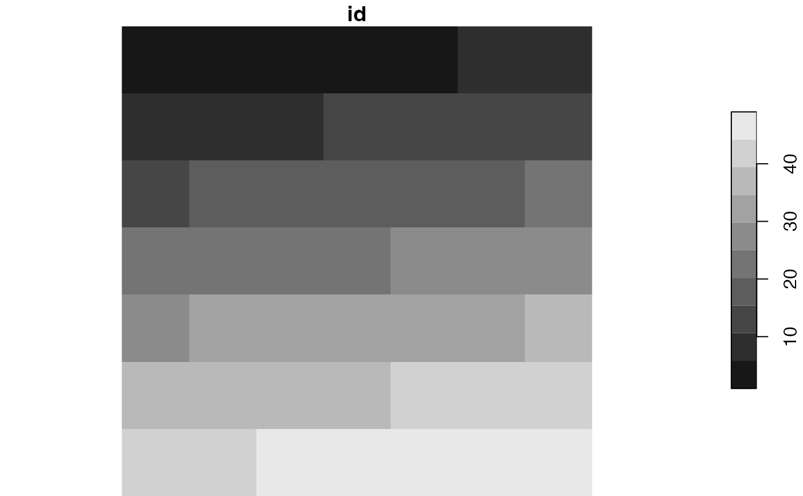
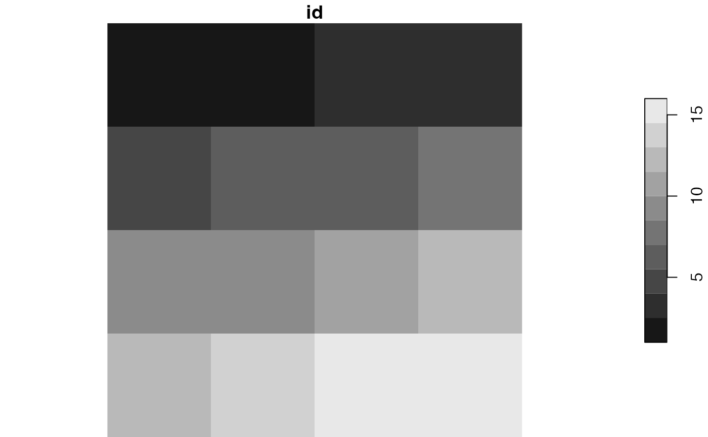
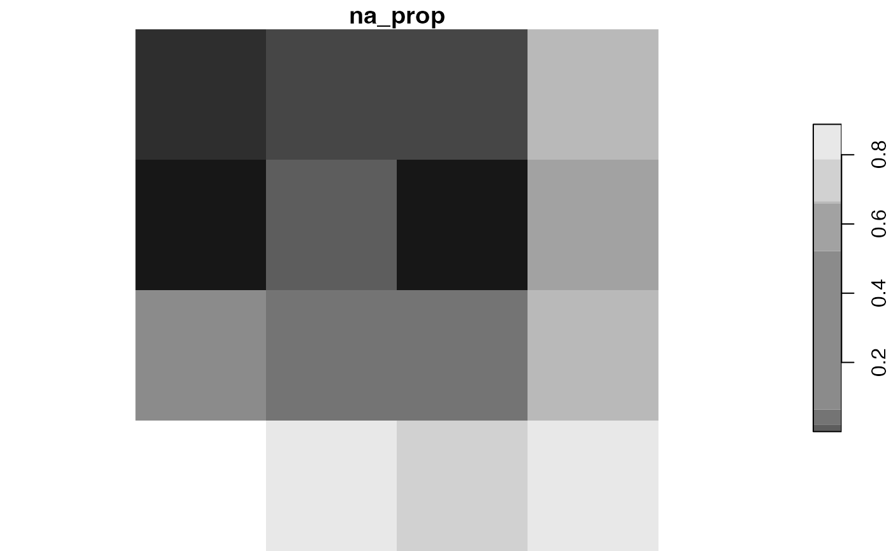

Creates or adds a stars object based on the input object or a set of parameters.
It accepts either an object of class stars or lsp.
In the first case, the output is created based on
the window parameter.
In the second case, the output converts the lsp object into
a stars object.
lsp_add_stars(x = NULL, window = NULL) # S3 method for default lsp_add_stars(x = NULL, window = NULL) # S3 method for lsp lsp_add_stars(x = NULL, window = NULL)
Arguments
| x | Object of class |
|---|---|
| window | Specifies areas for analysis. It can be either: |
Examples
library(stars) landform = read_stars(system.file("raster/landform.tif", package = "motif")) plot(landform)lc_cove = lsp_signature(landform, type = "cove", window = 200, normalization = "pdf") lc_cove_lsp = lsp_add_stars(lc_cove)#> Warning: Column signature is of a list class and will be dropped from the output object.plot(lc_cove_lsp)